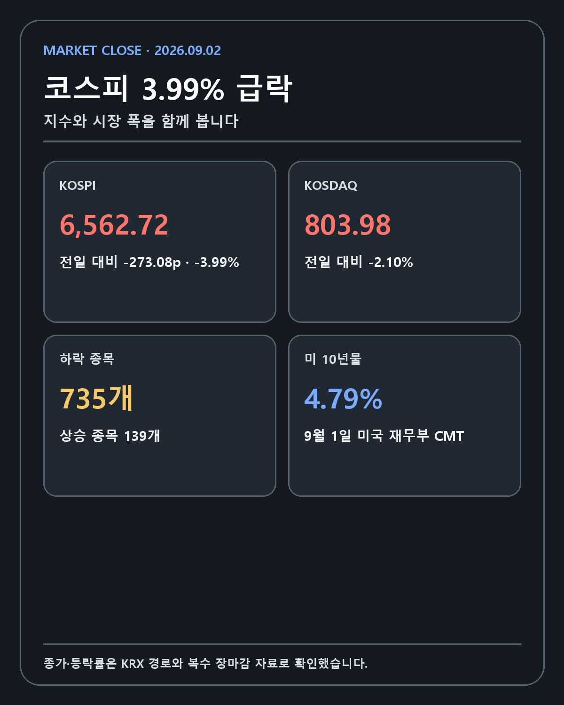
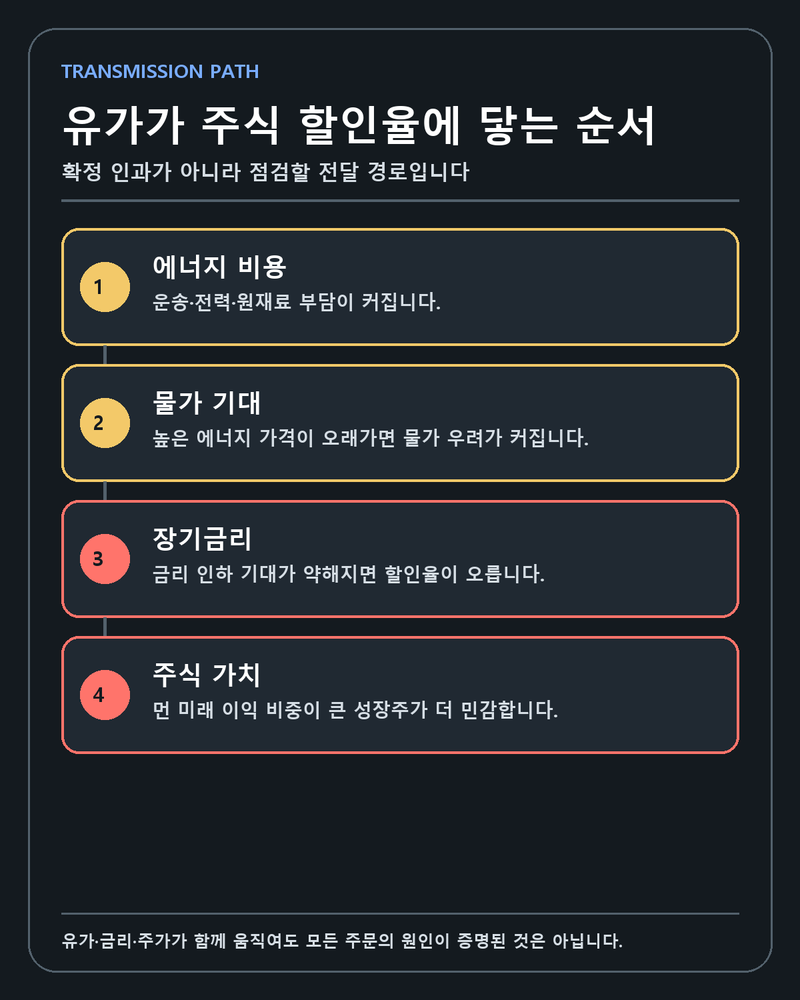
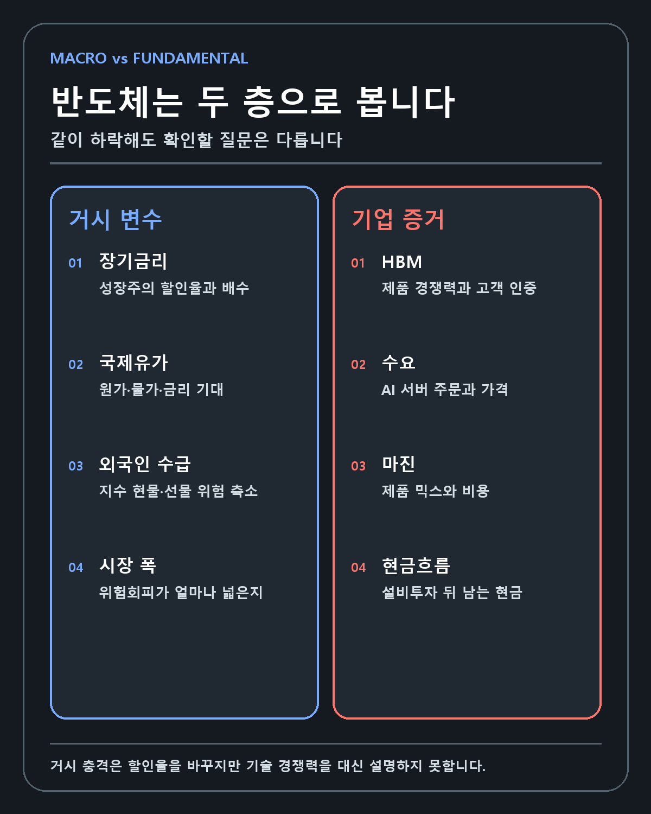
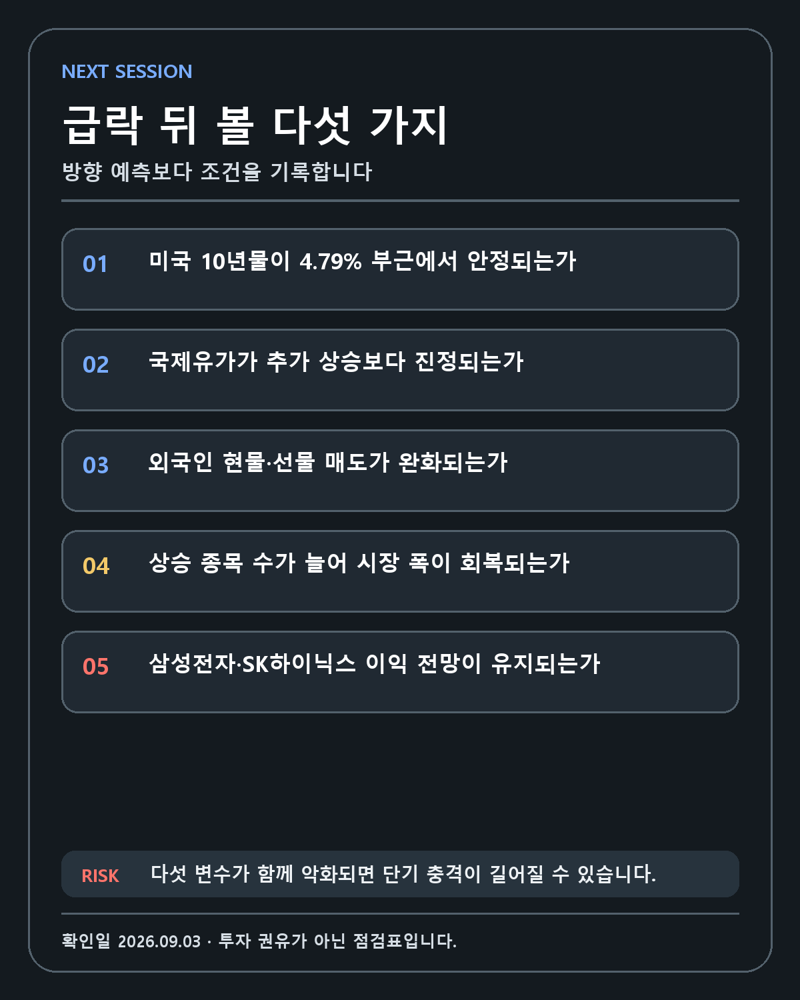

KOREA MARKET · DEEP RESEARCH
코스피 3.99% 급락의 구조: 유가·미국 10년물·외국인 수급이 반도체 할인율에 닿는 순서
하루 4% 가까운 지수 하락을 한 줄의 공포로 설명하지 않습니다. 확인된 시장 수치와 거시 변수, 반도체 기업의 펀더멘털을 분리합니다.
FIVE-LINE ANSWER
코스피는 9월 2일 6,562.72로 마감해 3.99% 하락했고 하락 종목은 735개였습니다. 미국 10년물 CMT는 8월 31일 4.75%에서 9월 1일 4.79%로 올랐습니다. 유가와 장기금리 상승, 외국인·기관 순매도는 같은 시기에 발생했지만 모든 주문의 단일 원인으로 증명된 것은 아닙니다. 다음 판단은 유가·10년물·외국인 수급·시장 폭·반도체 이익 전망이 함께 안정되는지를 확인하는 데서 시작합니다.
먼저 내릴 결론
2026년 9월 2일 코스피는 6,562.72로 마감해 3.99% 하락했습니다. 코스닥은 803.98로 2.10% 내렸습니다. 하락 종목은 735개, 상승 종목은 139개였습니다. 일부 반도체 주식만 조정받은 날이 아니라 시장 대부분이 함께 낮아진 위험회피 장세였습니다.
같은 시기에 국제유가가 급등했고 미국 10년물 국채금리는 8월 31일 4.75%에서 9월 1일 4.79%로 올라갔습니다. 외국인과 기관은 한국 주식을 순매도했습니다. 이 네 장면은 서로 연결될 수 있지만, 유가가 코스피를 정확히 3.99% 떨어뜨렸다는 식의 단일 인과로 만들면 안 됩니다. 시장에는 프로그램 매매, 차익실현, 환율 헤지, 기업별 기대 변화가 동시에 존재하기 때문입니다.
이번 급락을 판단하는 핵심은 지수의 하루 등락이 아니라 충격의 지속성입니다. 유가와 장기금리가 며칠 안에 안정되고 반도체 이익 전망이 유지되면 시장은 높은 기대를 조정한 뒤 다시 기업 실적으로 시선을 옮길 수 있습니다. 반대로 에너지 가격, 장기금리, 외국인 수급과 기업 이익이 함께 나빠지면 단기 조정이 투자 논리 변화로 넘어갑니다.
FACT: 9월 2일 한국 시장에서 벌어진 일

한국거래소 데이터마켓은 주가지수와 종목별 시세를 제공하는 공식 경로입니다. 이 경로를 기준으로 수치를 전한 연합뉴스 장마감 기사와 뉴스핌 자료를 대조했습니다.
| 시장 | 종가 | 전일 대비 | 등락률 |
|---|---|---|---|
| 코스피 | 6,562.72 | -273.08포인트 | -3.99% |
| 코스닥 | 803.98 | -17.27포인트 | -2.10% |
유가증권시장의 상승 종목은 139개, 하락 종목은 735개, 보합은 37개였습니다. 하락 종목 수가 상승 종목 수의 다섯 배를 넘었습니다. 시장 폭을 보면 특정 기업의 악재가 지수를 끌어내렸다기보다 투자자들이 위험자산 전반의 노출을 줄인 날에 가깝습니다.
외국인과 기관이 순매도하고 개인이 순매수한 방향도 여러 장마감 자료에서 일치했습니다. 세부 순매도 금액은 자료마다 집계 범위가 달라 이 글의 핵심 수치에서 제외합니다. 현물, 선물, 프로그램 매매, 기타법인을 어떻게 나누느냐에 따라 숫자가 달라질 수 있습니다. 방향과 정확한 금액을 같은 수준의 사실로 취급하지 않았습니다.
미국 10년물 4.79%는 무엇을 바꾸나
미국 재무부의 Daily Treasury Par Yield Curve Rates에 따르면 10년물 CMT는 8월 31일 4.75%에서 9월 1일 4.79%로 상승했습니다. 이 수치는 장중 거래 한 건의 금리가 아니라 재무부가 일별로 산출한 공식 파 수익률입니다.
장기금리는 기업 가치평가의 배경 숫자입니다. 미래에 받을 현금을 현재 가치로 환산할 때 적용하는 할인율이 올라가면 같은 이익 전망이라도 주식의 적정가치는 낮아집니다. 특히 현재 이익보다 3년, 5년 뒤의 성장을 크게 반영한 기업은 금리 변화에 민감합니다.
반도체는 성장 산업이지만 이 원리에서 벗어나지 않습니다. HBM과 AI 서버 수요가 강하고 매출이 늘어도 시장이 적용하는 주가수익비율이나 현금흐름 배수가 낮아지면 주가는 실적보다 먼저 조정됩니다. 반대로 장기금리가 안정되고 다음 분기 이익 추정치가 유지되면 높은 할인율 충격은 되돌려질 여지가 있습니다.
10년물 4.79%를 기계적인 매도선으로 쓰면 곤란합니다. 중요한 것은 절대 숫자 하나가 아니라 방향과 기업 이익의 조합입니다. 금리가 4.79%에 머물러도 이익 전망이 더 빠르게 오르면 주가는 버틸 수 있습니다. 금리가 소폭 내려도 실적 전망이 크게 낮아지면 주가는 약할 수 있습니다.
국제유가가 한국 기업에 들어오는 세 개의 통로

한국은 원유를 대부분 해외에서 조달합니다. 국제유가가 오르면 첫 번째로 원가가 변합니다. 항공·운송은 연료비, 화학은 원재료, 제조업은 전력과 물류비 부담이 커집니다. 기업이 비용을 판매가격에 넘기지 못하면 영업이익률이 낮아집니다.
두 번째 통로는 물가입니다. 에너지 가격 상승이 소비자물가와 기대인플레이션에 오래 남으면 중앙은행이 금리를 빨리 낮추기 어려워집니다. 시장이 금리 인하보다 동결이나 인상 가능성을 더 크게 반영하면 채권 수익률이 오르고 성장주의 할인율이 높아집니다.
세 번째는 소비와 환율입니다. 가계가 연료와 전기, 운송에 더 많은 돈을 쓰면 다른 소비가 줄 수 있습니다. 수입 에너지 비용이 늘면 교역조건과 기업의 달러 수요에도 영향을 줍니다. 다만 원달러 환율은 유가만으로 움직이지 않으므로 한 방향으로 단정하지 않습니다.
정유사에는 다른 경로가 작동합니다. 원유 가격이 오를 때 보유 재고의 평가이익이 생길 수 있고 정제마진이 함께 확대되면 이익이 늘 수 있습니다. 하지만 원유 가격만 오르고 제품 가격이 따라오지 않으면 운전자금 부담과 마진 압박이 커집니다. 유가 상승=정유주 상승이라는 공식도 늘 맞지는 않습니다.
AP와 Reuters는 9월 1일 원유 선물이 큰 폭으로 상승했다고 보도했습니다. 두 보도에 나온 결제 가격은 일치했지만, 이번 검증에서는 거래소의 원시 결제 원장을 직접 대조하지 못했습니다. 그래서 이 글의 핵심 표에는 정확한 원유 결제 가격을 넣지 않았습니다. 방향은 확인하되 숫자의 권위를 과장하지 않는 경계입니다.
동시발생과 인과를 구분해야 하는 이유
유가와 장기금리가 오르고 코스피가 급락한 시간 순서는 확인됩니다. 시장 관계자들은 에너지 가격, 인플레이션 우려와 글로벌 국채 매도를 위험회피의 배경으로 설명했습니다. 그러나 매도 주문을 낸 모든 투자자에게 이유를 물은 자료는 없습니다.
차익실현은 다른 설명입니다. 코스피와 반도체 대형주가 이전에 크게 올랐다면 새로운 불확실성이 등장했을 때 수익을 확정하려는 매물이 커질 수 있습니다. 주식의 펀더멘털이 훼손되지 않아도 포지션이 무거운 시장은 작은 충격에 민감합니다.
프로그램 매매와 파생상품 헤지도 영향을 줍니다. 지수 선물이나 옵션의 위험을 줄이려고 현물을 팔면 개별 기업의 전망과 무관한 매도가 발생합니다. 외국인이 환율이나 글로벌 포트폴리오 위험을 조정할 때 한국 비중을 줄이는 경우도 있습니다.
기업별 기대도 남아 있습니다. 삼성전자와 SK하이닉스의 HBM 경쟁, 공급능력, 가격과 고객 구성에 대한 판단은 거시환경과 별개로 움직입니다. 같은 날 함께 떨어졌다는 사실만으로 두 회사의 기술 위치가 똑같이 나빠졌다고 볼 수 없습니다.
이 때문에 원인을 하나로 고정하면 다음 날 대응도 틀어집니다. 중동 긴장이 완화됐는데 시장이 계속 약하다면 금리와 수급 또는 기업별 이익을 다시 봐야 합니다. 유가가 높은데도 반도체가 회복하면 시장이 이익 성장을 더 크게 평가하고 있을 수 있습니다.
반도체 투자자가 따로 확인할 것

삼성전자와 SK하이닉스는 코스피에서 차지하는 비중이 큽니다. 두 종목의 하락은 지수 자체를 움직입니다. 그러나 지수와 기업 분석은 다른 층위입니다.
삼성전자에서는 HBM 공급 확대, 주요 고객 인증, 메모리 가격, 파운드리 적자, 설비투자와 주주환원을 확인해야 합니다. SK하이닉스에서는 HBM 제품 믹스, 가격과 출하량, 특정 고객 의존, 설비투자와 잉여현금흐름을 봐야 합니다. 거시 충격이 사라져도 이 변수들이 나빠지면 투자 논리는 약해집니다.
반대로 기술 경쟁력이 유지되고 주문이 늘며 현금흐름이 개선된다면 하루 4% 가까운 지수 하락은 장기 펀더멘털의 결론이 아닙니다. 가격은 단기 위험 프리미엄을 반영하고, 사업은 제품·고객·현금으로 증명됩니다. 투자자는 두 기록을 따로 보관해야 합니다.
세 가지 시나리오
1. 빠른 안정
유가가 급등분을 일부 되돌리고 미국 10년물이 더 오르지 않습니다. 외국인 매도 강도가 약해지고 상승 종목 수가 늘어납니다. 삼성전자와 SK하이닉스의 이익 전망은 유지됩니다. 이 경우 9월 2일 하락은 높은 기대가 매크로 충격을 만나 빠르게 조정된 사건으로 남을 수 있습니다.
무효화 조건은 유가와 금리가 다시 고점을 높이고 외국인 매도가 이어지는 경우입니다. 지수가 하루 반등했다고 안정 시나리오가 확인되는 것은 아닙니다.
2. 높은 변동성의 횡보
유가와 금리가 높은 수준에서 오르내리지만 기업 이익 추정치는 크게 변하지 않습니다. 투자자는 더 높은 할인율과 여전히 강한 AI 수요 사이에서 가격을 다시 찾습니다. 코스피는 방향 없이 큰 폭으로 움직일 수 있습니다.
이 구간에서는 지수 저점 예측보다 분기 실적이 중요합니다. 기업이 높은 금리를 상쇄할 만큼 이익을 늘리는지 확인해야 합니다. 매수하더라도 한 번의 가격보다 시간과 비중을 나누는 이유가 생깁니다.
3. 매크로와 이익의 동반 악화
중동 충돌이 확대돼 에너지 비용이 더 오르고 장기금리도 상승합니다. 물가 부담이 기업 마진과 소비에 영향을 주며 반도체 주문 또는 가격 전망까지 낮아집니다. 외국인 매도가 장기간 이어지면 단기 충격이 기업 이익 하향으로 넘어갑니다.
이 시나리오는 단순한 주가 변동으로 넘길 수 없습니다. 기술 경쟁력과 수요를 다시 검토하고, 높은 밸류에이션이 유지될 근거가 남았는지 확인해야 합니다.
내 투자 원칙에 대입한 판단
저는 기업을 기술, 해자, 창업자와 경영진, 성장률, 현금흐름 순서로 봅니다. 코스피 급락이 이 순서를 바꾸지는 않습니다. 삼성전자와 SK하이닉스의 기술과 고객 수요가 유지되는지 먼저 확인합니다.
다만 거시환경을 무시한다는 뜻은 아닙니다. 기술이 좋은 기업도 가격이 너무 높고 할인율이 빠르게 오르면 장기간 조정을 받을 수 있습니다. 펀더멘털과 매수 가격은 별개의 질문입니다. 좋은 회사를 찾는 것과 지금 가격에서 기대수익률이 충분한지를 나눠야 합니다.
저는 하루 급락 때문에 투자 논리를 폐기하지 않겠습니다. 동시에 장기 투자이니 가격은 상관없다고 생각하지도 않습니다. 유가, 10년물, 외국인 수급과 이익 전망이 같은 방향으로 악화되는지 확인하고 추가 매수 속도를 결정합니다.
다음 점검표

| 확인 항목 | 안정 신호 | 경계 신호 | 투자 논리 훼손 신호 |
|---|---|---|---|
| 국제유가 | 급등분 진정 | 높은 수준 횡보 | 추가 급등과 공급 차질 확대 |
| 미국 10년물 | 4.79% 부근 안정 또는 하락 | 높은 변동성 | 고점 갱신과 금리 전망 상향 |
| 외국인 수급 | 순매도 축소 | 매도 지속 | 현물·선물 동반 대규모 이탈 |
| 시장 폭 | 상승 종목 증가 | 일부 대형주만 반등 | 하락 종목 우위 장기화 |
| 반도체 이익 | 전망 유지·상향 | 변화 없음 | HBM·메모리 수요와 마진 하향 |
이 표는 매수·매도 신호가 아니라 급락의 성격을 분류하는 도구입니다. 다섯 항목이 모두 안정되기 전에 시장이 먼저 오를 수도 있고, 일부가 나쁜 상태에서도 기업별 주가는 다르게 움직일 수 있습니다.
반대 논리
첫째, 시장은 이미 여러 위험을 가격에 반영했을 수 있습니다. 유가와 금리가 높은 수준이어도 더 나빠지지 않으면 악재의 강도는 약해집니다. 둘째, AI 반도체 이익이 예상보다 강하면 높은 할인율을 상쇄할 수 있습니다. 셋째, 외국인 매도가 단기 포지션 조정이라면 수급은 빠르게 돌아설 수 있습니다.
반대로 낙관론의 약점도 있습니다. 코스피가 이전에 큰 폭으로 올랐다면 밸류에이션 부담이 남아 있을 수 있습니다. 에너지 충격이 물가와 통화정책으로 번지면 조정 기간이 길어질 수 있고, 신용잔고가 높은 구간에서는 가격 하락이 추가 매도를 부를 수 있습니다.
어느 쪽도 하루 수익률만으로 증명되지 않습니다. 다음 며칠의 자산 간 움직임과 다음 분기의 기업 숫자가 필요합니다.
이 분석에서 일부러 사용하지 않은 숫자
급락 기사에는 외국인 순매도액, 선물 포지션, 원유의 장중 고점과 종목별 낙폭이 많이 등장합니다. 숫자가 많을수록 정밀해 보이지만 집계 범위와 시점이 다르면 한 표에 넣는 순간 오히려 의미가 흐려집니다.
이번 분석은 종가가 확정된 코스피·코스닥, 미국 재무부가 공표한 10년물, 복수 자료에서 방향이 일치한 시장 폭과 투자 주체의 매도 방향만 핵심 사실로 사용했습니다. 원유 선물의 정확한 결제 가격은 두 주요 보도가 일치했어도 거래소 원장을 직접 확인하지 못해 보조 맥락으로 남겼습니다. 외국인과 기관의 순매도 금액도 자료별 차이가 있어 방향만 사용했습니다.
이 선택은 정보를 줄이려는 것이 아닙니다. 다음 날 같은 기준으로 다시 비교할 수 있는 숫자만 남기려는 것입니다. 기준이 고정돼야 유가가 진정됐는지, 금리가 안정됐는지, 시장 폭과 수급이 돌아섰는지를 연속해서 판단할 수 있습니다.
급락 이후 기록을 남기는 방법
첫날에는 가격과 시장 폭을 기록합니다. 코스피·코스닥 종가, 상승·하락 종목 수와 투자 주체의 방향을 같은 시점으로 맞춥니다. 장중 고점과 종가를 섞지 않고, 현물과 선물 수급도 구분합니다. 이 기록은 시장이 얼마나 넓게 흔들렸는지를 보여 줍니다.
둘째 날부터는 원인이 지속되는지 확인합니다. 유가가 급등분을 유지하는지, 미국 10년물이 다시 고점을 높이는지, 외국인 매도가 이어지는지를 봅니다. 지수가 반등해도 원인이 그대로라면 기술적 반등일 수 있고, 지수가 약해도 금리와 유가가 안정된다면 기업별 재평가가 진행되는 구간일 수 있습니다.
다음 실적 발표에서는 사업 증거를 갱신합니다. 삼성전자와 SK하이닉스의 HBM 매출, 제품 믹스, 총마진, 설비투자와 현금흐름이 기존 가정에서 벗어났는지 확인합니다. 거시 충격이 실적에 실제로 들어오지 않았다면 하루 급락과 장기 투자 논리를 분리할 근거가 생깁니다.
이렇게 기록하면 그날 무서워서 팔았다거나 많이 내려서 샀다는 기억을 조건과 수치로 바꿀 수 있습니다. 맞은 방향만 남기는 사후 설명도 줄어듭니다. 투자 판단의 품질은 저점을 정확히 맞힌 횟수보다 어떤 조건에서 가설을 유지하고 수정했는지로 평가할 수 있습니다.
최종 판단
9월 2일은 지수, 시장 폭, 수급, 유가와 장기금리가 동시에 위험회피 방향을 가리킨 날입니다. 확인된 사실은 분명합니다. 코스피 6,562.72, 전일 대비 -3.99%, 코스닥 -2.10%, 미국 10년물 4.79%, 하락 종목 735개입니다.
확인되지 않은 부분도 분명합니다. 모든 매도의 단일 원인, 급락이 끝나는 날짜, 정확한 지수 저점은 알 수 없습니다. 국제유가의 정확한 결제 가격도 이번 검증에서는 거래소 원장을 직접 확인하지 못했으므로 핵심 수치에서 제외했습니다.
투자자는 모르는 것을 예측으로 채우기보다 조건을 추적할 수 있습니다. 유가와 10년물, 외국인 수급, 시장 폭과 반도체 이익을 같은 표에서 보면 급락이 단기 매크로 충격인지 장기 이익 훼손인지 조금 더 빨리 구분할 수 있습니다.
미국의 이란 제재와 유가 흐름을 분석한 기존 글은 지정학적 뉴스가 실제 공급과 가격으로 바뀌는 단계를 따로 설명합니다.
이 글은 독립적인 교육·투자 기록이며 특정 종목의 매수 또는 매도를 권유하지 않습니다. 시장 가격과 공시는 작성 이후 달라질 수 있으며 모든 투자 결정과 손익의 책임은 투자자 본인에게 있습니다.
작성 방법
2026년 9월 3일 기준 한국거래소 데이터 경로, 연합뉴스·뉴스핌 장마감 수치, 미국 재무부 일별 금리표와 AP·Reuters의 원유시장 보도를 대조했습니다. 원유의 정확한 결제 가격은 거래소 원장을 직접 확인하지 못해 핵심 단정 수치에서 제외했습니다.
개인 투자 기록이며 특정 금융상품이나 종목의 매수·매도를 권유하지 않습니다. 투자 판단과 손익의 책임은 투자자 본인에게 있습니다.